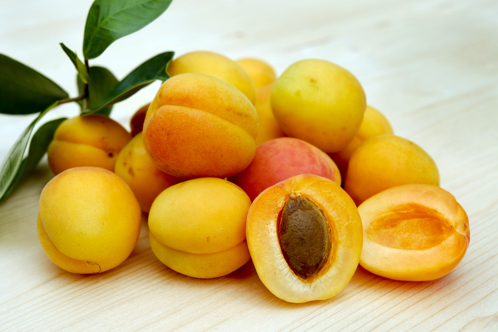

Apricots

Apricots (closely related to peaches) are a nutrient-rich fruit that provides important vitamins and minerals. They are particularly high in vitamin A, which supports vision, immunity, and cell growth. Apricots also contain vitamin C, fiber for digestion, potassium for nerve and muscle function, and antioxidants that protect against cell damage. Enjoy apricots as a delicious and nutritious addition to your diet.